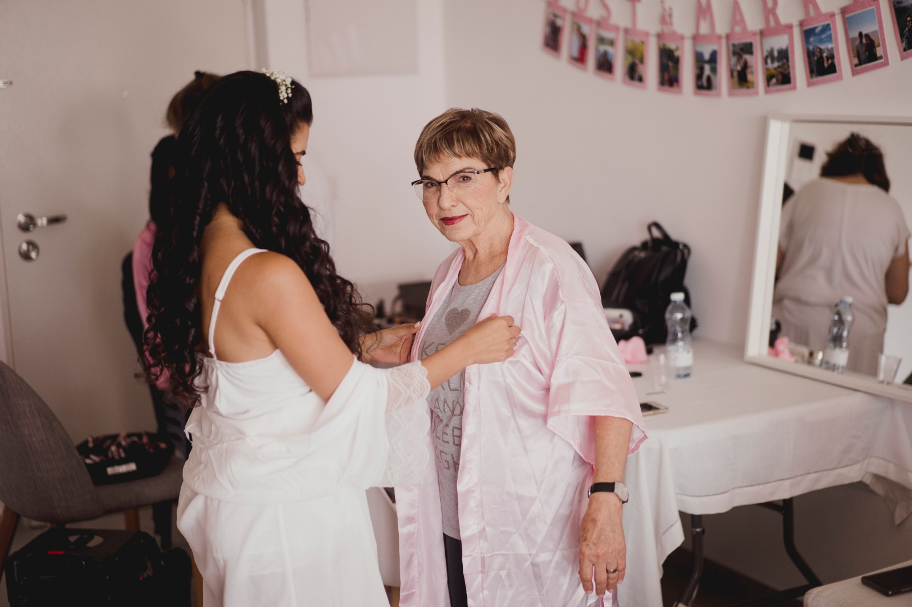
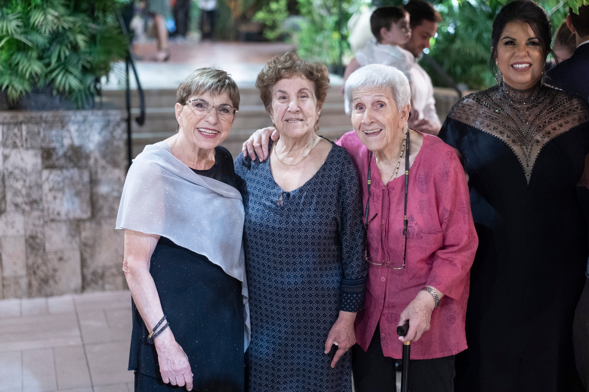
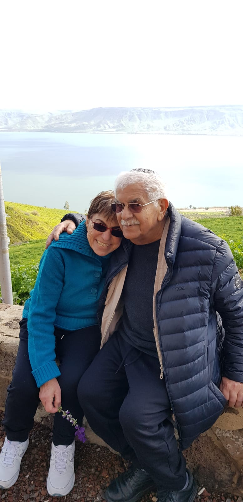
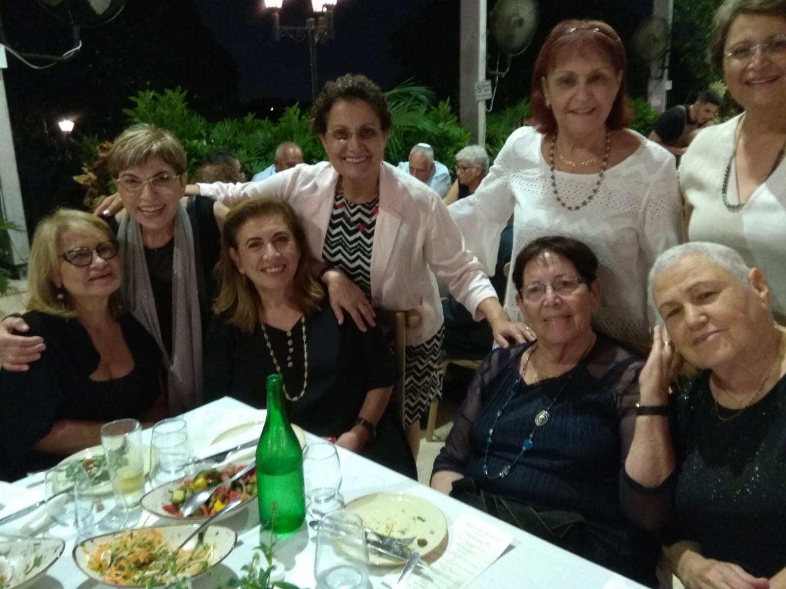

About Me
Nina, my grandmother was born on 6/4/1941 in Morocco in the city of Paz.
My grandmother's family left Morocco in 1949 to France for the city of Marseille where there was a immigrant camp.
My grandmother has 2 brothers and 5 sisters, my grandmother is the youngest of them.
The brothers and sisters to the Itach family home made "Aliyah" gradually and in hard routes to Israel.
In October 1949, my grandmother immigrated to Israel with the so-called "Oslo children", arriving in Israel on two planes.
These two planes flew out of the country to Tunis to make a stop in Norway. Both planes took children from Tunis and the destination was Norway, to the camp my grandmother was staying at. On the way from Tunis, near Norway, a single plane crashed. The children perished and only one child was left alive.
My grandmother met with her family in the country, but continued to be part of Kibbutz Gniger's Youth Aliyah where she graduated from elementary school.
My grandmother was already gifted as a child and cultivated many hobbies such as drawing, reading and playing the flute.
At the end of high school, she joined her family's home in Rishon Lezion and trained for teaching in a "Talpiot" teacher's seminar in Tel Aviv.
In 1960 she completed her training and joined the army. Taught in Kfar Yuval as a soldier teacher.
After military service, she worked as a teacher in Kiryat Ekron.
In January 1965, she married my grandfather.
In April 1996, Grandmother received the "Teacher for Life" award for excellence in science education in the field of education.
In 2001, she retired, but continued to mentor science teachers in junior high and kibbutz seminary.
At leisure, she exercises, swims, attends lectures in various fields, does vitrage work and enjoys working with grandchildren.
My photos
   
My playlist
Give me a like
Tweet #ILoveNinasWebsite
Scan my code
Q&A
What's the difference between Web 1.0, Web 2.0 and Web 3.0?
Web 1.0 is simply an information portal where users passively receive information without being given the opportunity to post reviews, comments, and feedback.
Web 2.0 encourages participation, collaboration, and information
sharing.
Examples of Web 2.0 applications are Youtube, Wiki, Flickr, Facebook,
and so on.
Web 3.0 is a semantic web which refers to the future. In Web 3.0, computers can interpret information like humans and intelligently generate and distribute useful
content tailored to the needs of users.
One example of Web 3.0 is Tivo, a digital video recorder.
Its recording program can search the web and read what it finds to you based on your preferences.
"Medicine side effects" Use Case
Web 1-The user has to register the specific site's url which talks about medicine side effects
Web 2-The user can search for the query in the search engine and they will get links to sites whose content is related to the topic of the query or contains the tags of the query words, not necessarily together.
Web 3-The user can search for the query in the search engine and they will get links to sites whose content is related to the topic of the query and does not necessarily contain the specific query words.